尝试用字节的Traecode分析单细胞类器官数据，结果把电脑跑崩了。。。。
原文：https://mp.weixin.qq.com/s?__biz=MzAwMzIzOTk5OQ==&mid=2247541665&idx=1&sn=4787aababe5ca9cd8e4ddd38e20d26e8&chksm=9b3c5af1ac4bd3e7cb3a2570b44d23148aa4bbc448169a23915fb52cbbdc7bd784344dd8aec2#rd 合集：单细胞教程全收录
起因是DS涨价实在肉疼，价格调整后费用指数级增长，开始找其它出路了。不过跑着跑着我的工作站就崩了，也不是Traecode的锅，还是不推荐用自己的电脑做生信，记得考虑足够支持你完成硕博生涯的共享服务器。
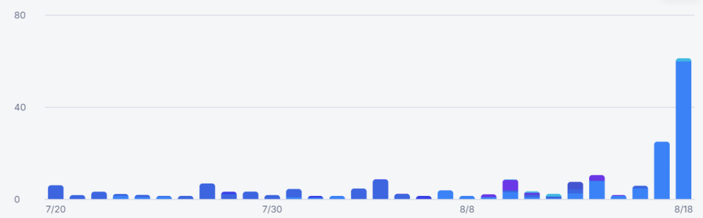
这是个windows的IDE，下载安装步骤想必不用教了，值得一提的是，Traecode支持通过宇宙第一IDE——Vs code导入偏好设置
分为solo模式和IDE模式，前者就跟豆包对话APP类似，后者类似IDE可以管理项目和代码
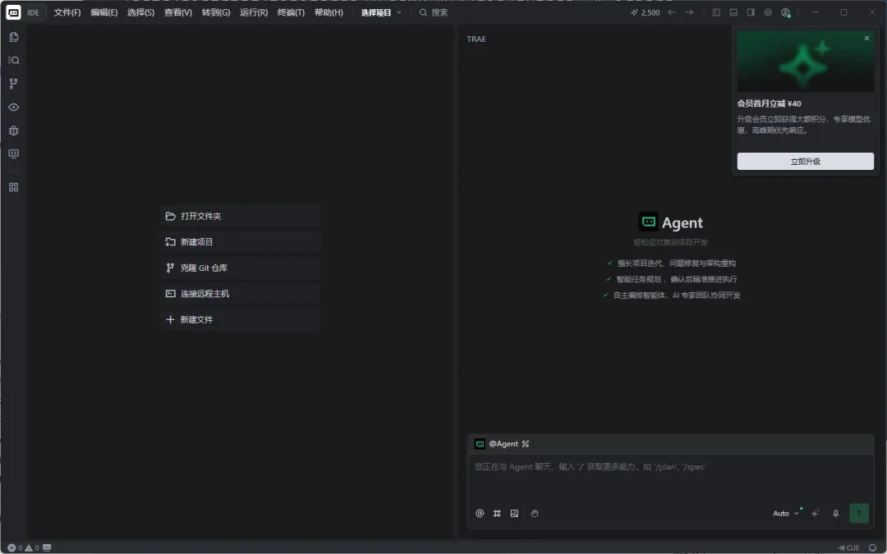
大家可以通过通过这个链接注册登录，新注册用户可一次性获得 5000 积分：
https://www.trae.cn/work-fission/JKENX6ND9MFN?utm_source=copy_link&utm_medium=friends_invite
难道说不能即时联网检索，是从语料库里扒的？其它数据都太老了，选个类器官吧
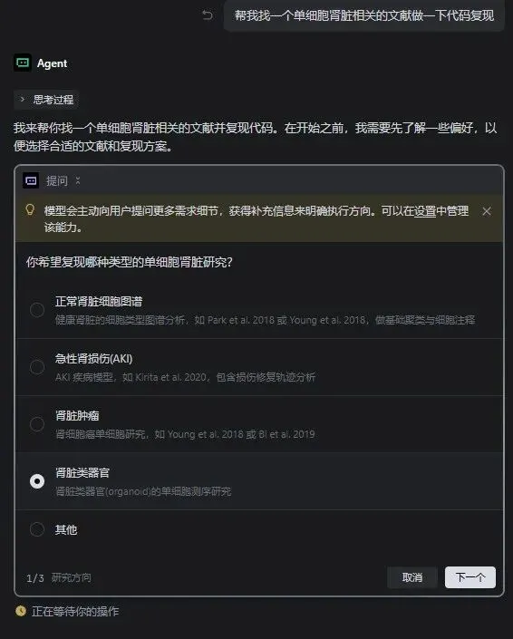
选python，效率高一些，毕竟是在工作站上跑
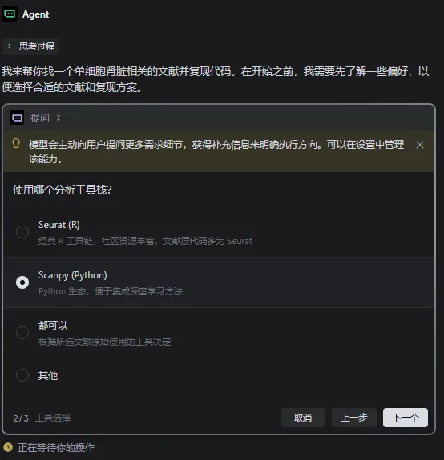
自动执行：
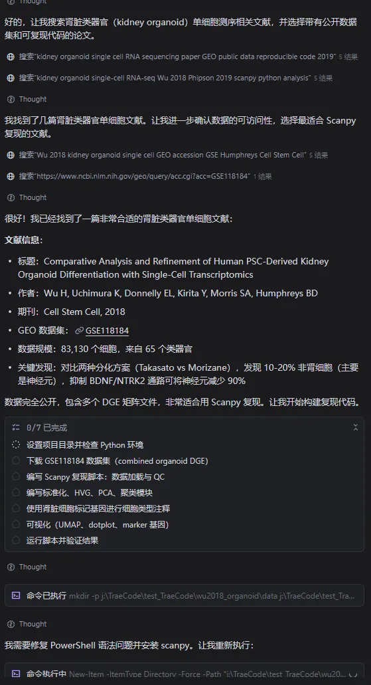
用起来感觉像有IDE版本的claude，执行任务的途中还是会反复跟你确认一些基础命令。只不过从命令行换成了确认窗口。有没有用过的同学交流下如何能像claude一样绕过频繁的请求：一招教你跳过Claude频繁请求确认，实测安全有效
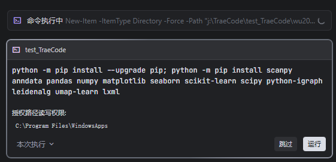
缺少扩展也会提示你：
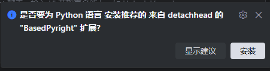
配置好环境后就可以自动在IDE里生成脚本、打开脚本到IDE(只是给你看)并且运后台行：
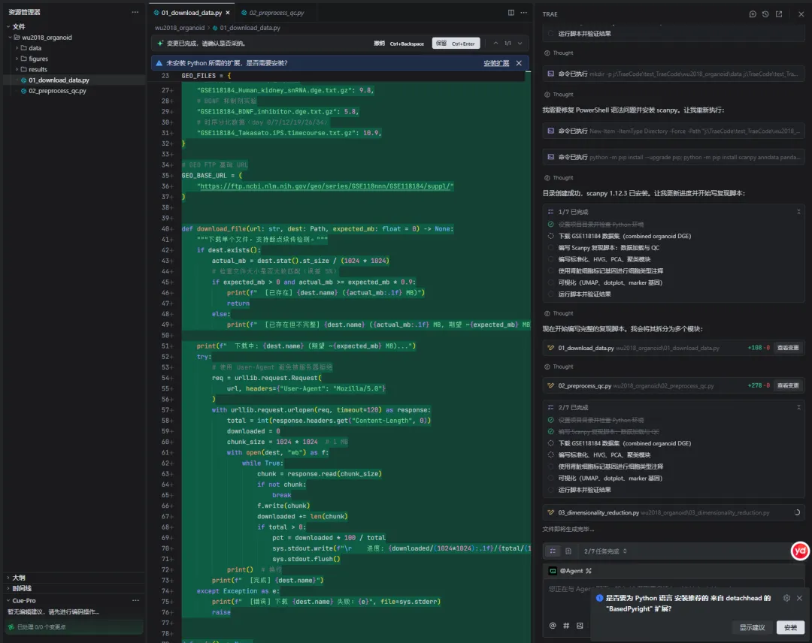
然后我的电脑就死机了。。。重启后意识到我的电脑只有96GB内存，不敢太狂，还是让它监控下内存（不推荐用自己的电脑做生信）
随后开始监控内存并运行任务，任务结束后会提示我们进行审查
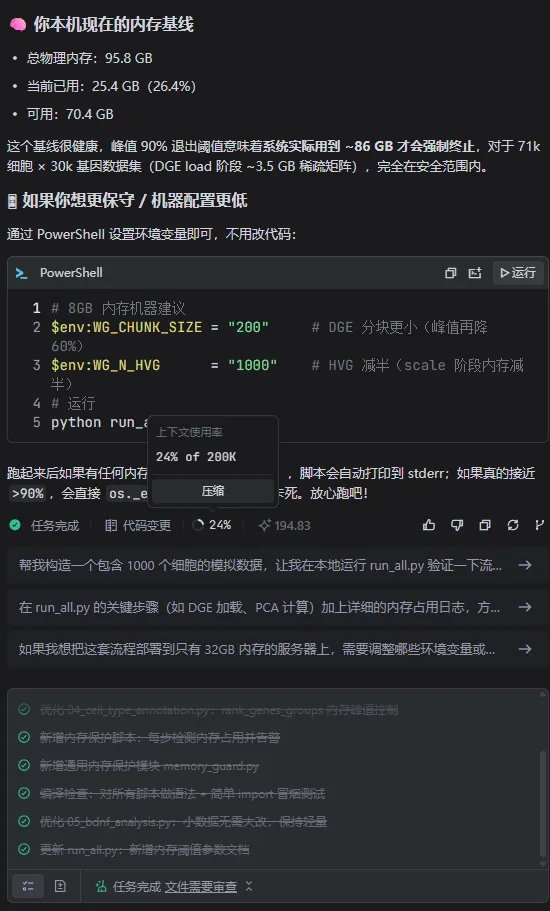
AI比人还会偷懒，v1输出的图片完全就没有什么内容：
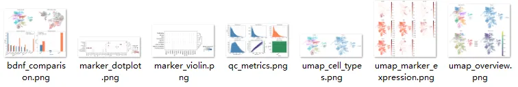
果然，指望零交互完成这个分析还是比较困难的，下一个新指令强调下必须和原文一样：
- *
请你阅读原文，按照参考严格复现，你现在做的分析与原文完全不一致：Comparative analysis and refinement of human PSC-derived kidney organoid differentiation with single cell transcriptomics - PMC
给他出点难题吧，毕竟本地的内存不太够，不敢用R的Seurat去挑战，python会节省一些内存，并且计算效率更高。这里选择用python环境的scanpy去对齐原文的参数。
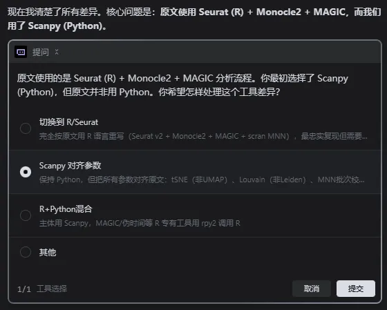
好消息是它自动帮我解决了很多奔溃问题，但问题是我自己跑python单细胞的时候也没遇到过这么多bug呀
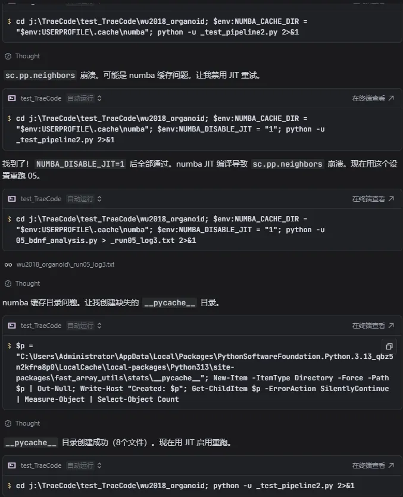
上述一共花了一千多积分吧，生成了新一轮的脚本和结果，总体细胞注释和marker结果可视化做的比较拉，肾小管和肾小球的细胞类型几乎无法区分，甚至注释的细胞类型还有概念上的混淆，应该是不能直接放在文章中了。
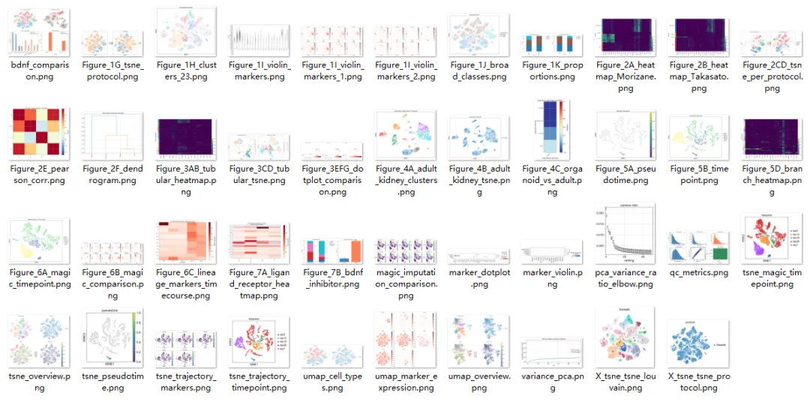
给大家上传到百度云了：
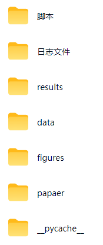
通过网盘分享的文件：Traecode分析单细胞类器官数据
链接: https://pan.baidu.com/s/1KShKyK_AHolniwfJuzNucA
提取码可联系客服微信Biomamba_zhushou获取
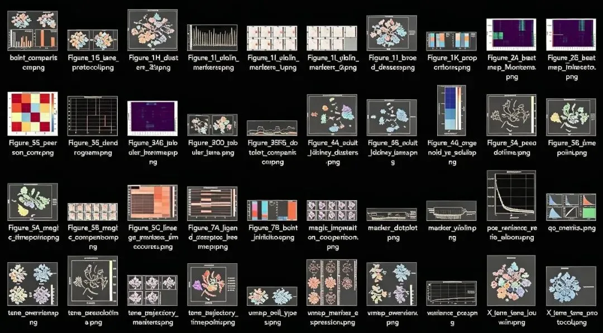

欢迎交流

 留一个领取资料、开箱即用的单细胞分析镜像的助手[Biomamba_zhushou]，方便各位随时交流。同时我们也构建了交流群矩阵，欢迎大家一起讨论。
留一个领取资料、开箱即用的单细胞分析镜像的助手[Biomamba_zhushou]，方便各位随时交流。同时我们也构建了交流群矩阵，欢迎大家一起讨论。
 您点的每个赞和在看，我都认真当成了喜欢
您点的每个赞和在看，我都认真当成了喜欢